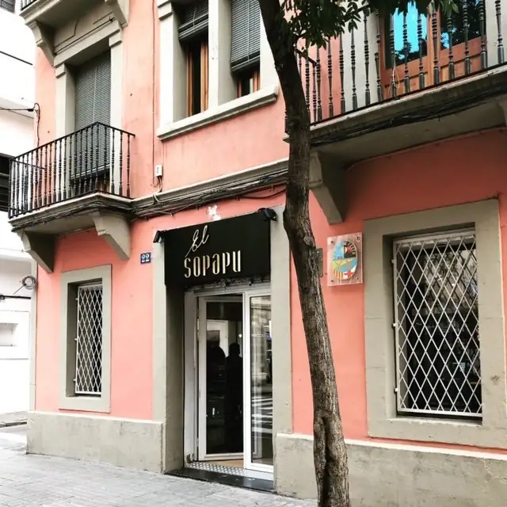
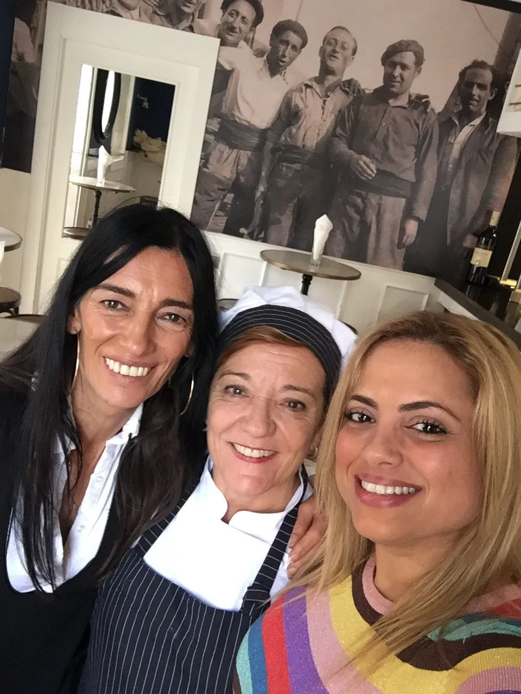
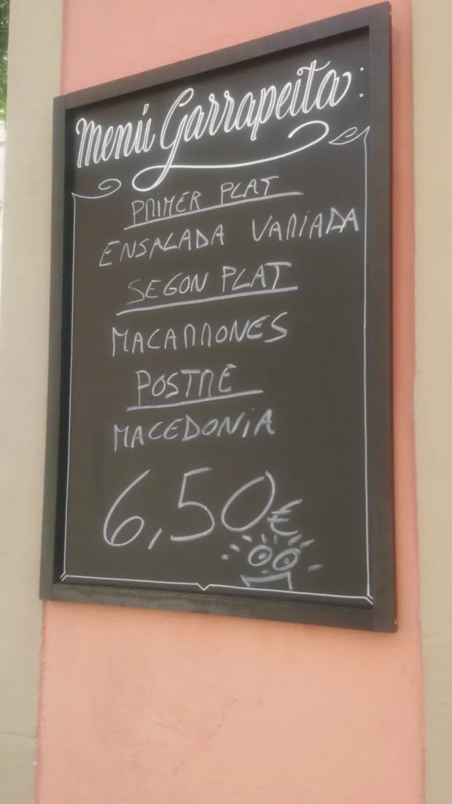
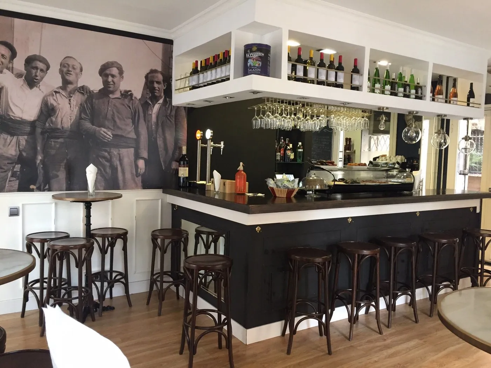
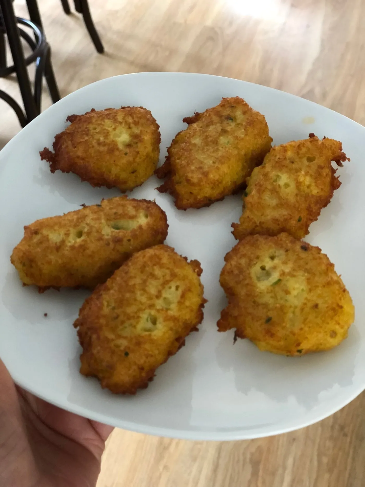
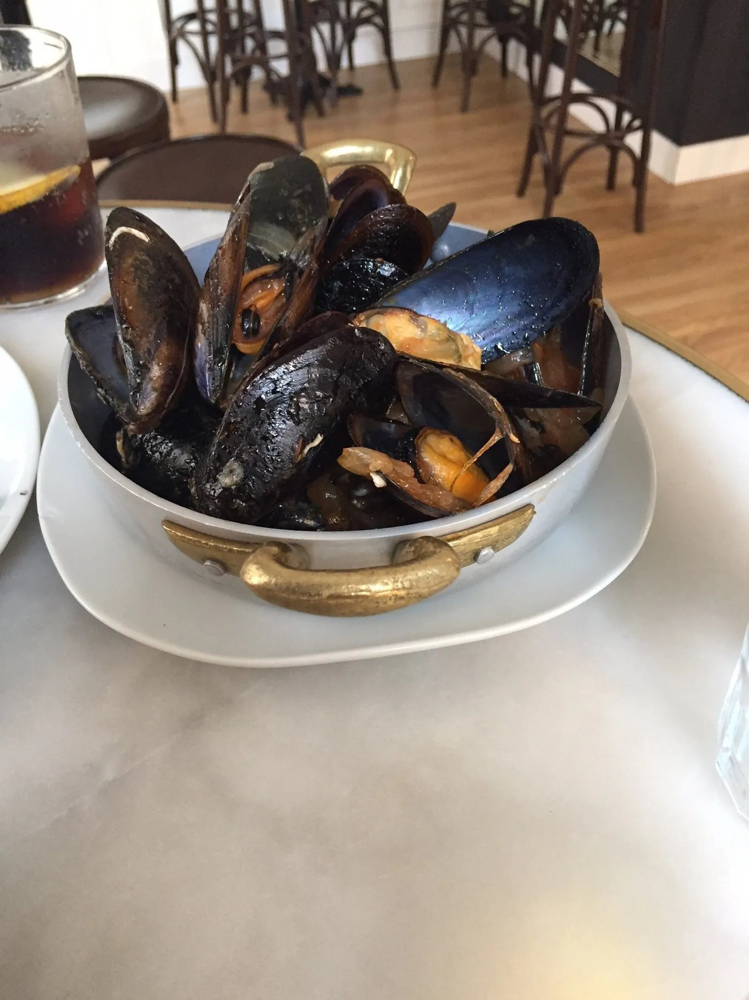
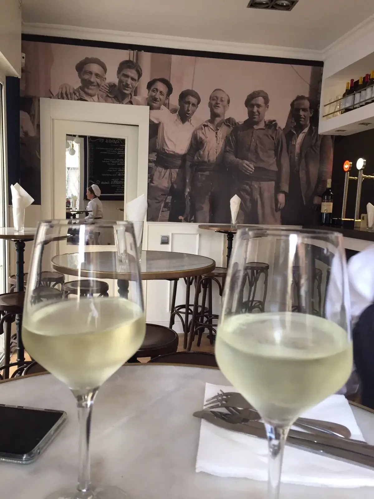
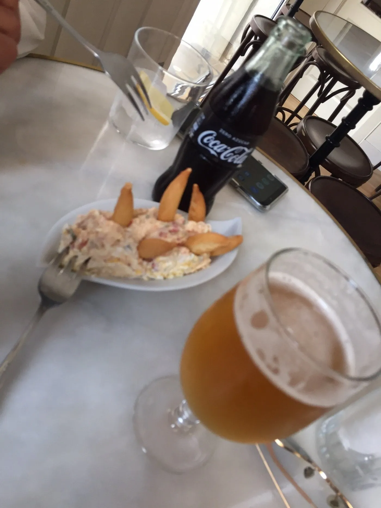
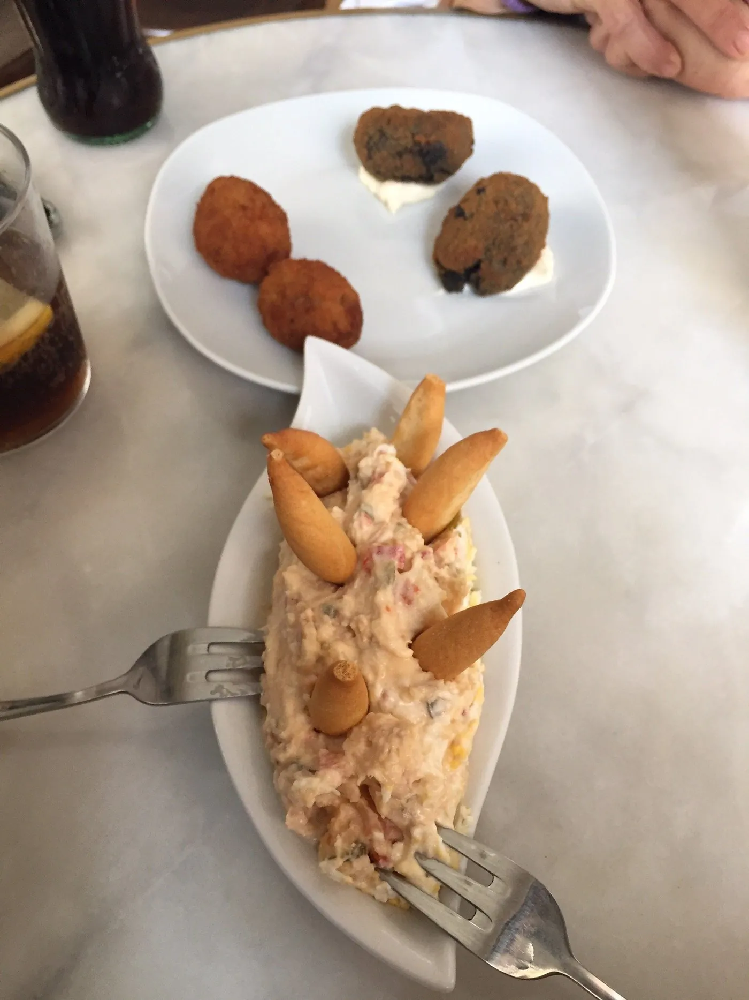

La cocina del abuelo, en el bajo de una casa del barrio.
Buñuelos de bacalao recién fritos, ensaladilla con boquerón del Cantábrico, mejillones en cazuela y el bacalao a la llauna como lo hacía su abuela. Tapas marineras hechas con calma, en un local pequeño de Carrer de Ginebra.

- 2019año fundación
- 4,9 ★valoración Tripadvisor
- 6,50 €menú del día
- 30cubiertos · barra y mesas
El apodo del abuelo era El Sopapu.
El abuelo de Josep, "el Palumita", llegó a la Barceloneta después de la Guerra Civil. Aprendió cocina marinera de su mujer y, con los años, se ganó un sobrenombre en el muelle: El Sopapu. Cocinaba para los pescadores antes de que salieran al mar.
Su hija heredó el recetario y se lo pasó a Josep, el nieto. Cuando el local del bajo del número 22 se quedó libre en 2019, no lo dudó. Pintaron la fachada de color coral, colgaron un mural de fotos antiguas de marineros del barrio y empezaron a servir las recetas familiares.
Calamares con cebolla. Bacalao a la llauna. Boquerones del día con limón. Buñuelos. Lo de toda la vida, hecho como se hace cuando hay tiempo y producto bueno. Sin trucos modernos.

El equipo en la sala, con el mural de marineros · La Barceloneta, principios de los años 50
Cocina marinera, carta corta, todo de mercado.
La carta cambia con el mercado. Lo que ves a continuación son los platos que casi siempre encontrarás, pero al llegar mira la pizarra: si hay pescado fresco del día, ese es el que hay que pedir.
Para empezartapas frías y calientes
Del marpescado fresco según mercado
Menú Garrapeitamediodía, lunes a viernes
Para acompañarvinos y cerveza de barril
Carta orientativa. Pesos, presentaciones y precio pueden variar según producto. Si tenéis intolerancias o alergias, avisad al pedir y os adaptamos la receta.
"Pasta del bar, fritura de la abuela, menú Garrapeita. Aquí se come como se comía en la Barceloneta de los años cincuenta."
— Reseña Tripadvisor · valoración 4,9 / 5 sobre 10 reseñas

Una barra, cuatro mesas, mural de marineros.
El Sopapu ocupa el bajo de un edificio del barrio. Treinta cubiertos contando barra, taburetes y las tres mesas redondas. Mármol blanco, sillas de madera curvada, mural retrato de marineros de la Barceloneta antigua.






Lo que conviene saber antes.
Para que vengas con la información clara y la cocina te pueda preparar lo mejor. Si tu duda no está, llámanos directamente.
-
¿Cuál es la especialidad de la casa?
Cocina marinera de la Barceloneta. La receta de la abuela de Josep, hija de pescadores. Los imprescindibles son los buñuelos de bacalao recién fritos, la ensaladilla con boquerón, los mejillones en cazuela y el bacalao a la llauna. Si hay pescado fresco del día en pizarra, eso es lo que hay que pedir. -
¿Se puede reservar mesa?
Sí. Para el viernes noche y sábado mediodía es muy recomendable porque el local es pequeño. Para diario al mediodía o domingo casi siempre hay sitio. Llama al 651 62 85 71 o envía un mail a elsopapu@gmail.com indicando día, hora y número de personas. -
¿Tenéis menú del día?
Sí, el "Menú Garrapeita" de mediodía: un primero, un segundo y postre por menos de diez euros. Cambia cada semana en función del mercado. Está escrito a tiza fuera del local. Lo solemos servir de lunes a viernes al mediodía y los sábados solo si hay producto. -
¿Aceptáis tarjeta? ¿Y grupos grandes?
Tarjeta sí, todas las habituales. Grupos grandes: el local tiene unas treinta personas sentadas y máximo cuarenta de pie en la barra. Para grupos de doce o más conviene avisar dos días antes para que la cocina esté preparada. Si vais a ser veinte o más, podemos cerrar el local para vosotros una noche bajo petición. -
¿Tenéis terraza o solo interior?
Solo interior. La calle de Ginebra es estrecha y no permite veladores. Pero la sala es luminosa, con techos altos y mucha ventilación natural. En verano la puerta queda abierta de par en par.
Carrer de Ginebra, 22.
A tres calles del Parc de la Ciutadella y a cinco minutos a pie de la playa de la Barceloneta. La fachada es coral, no tiene pérdida.
- Lunes08:00 – 17:00
- Martes08:00 – 17:00
- MiércolesCerrado
- Jueves08:00 – 17:00
- Viernes08:00 – 17:00 · 19:30 – 23:00
- Sábado08:00 – 23:00
- Domingo08:00 – 16:00